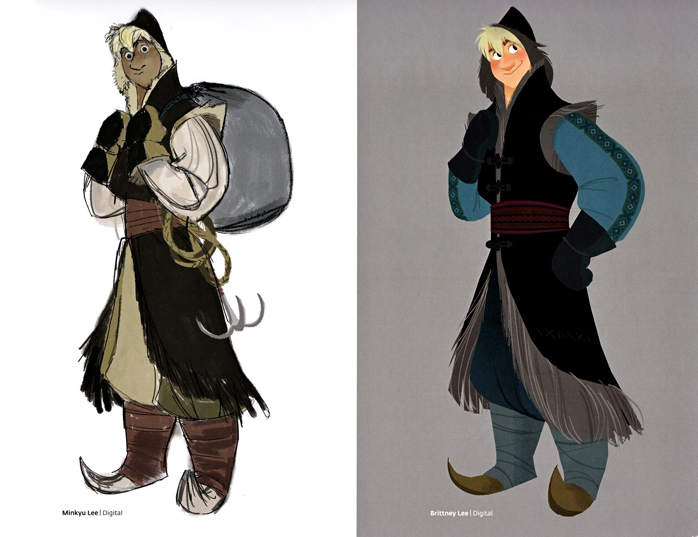
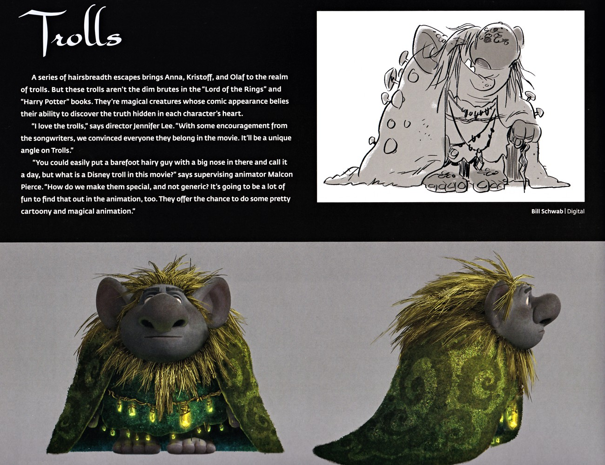
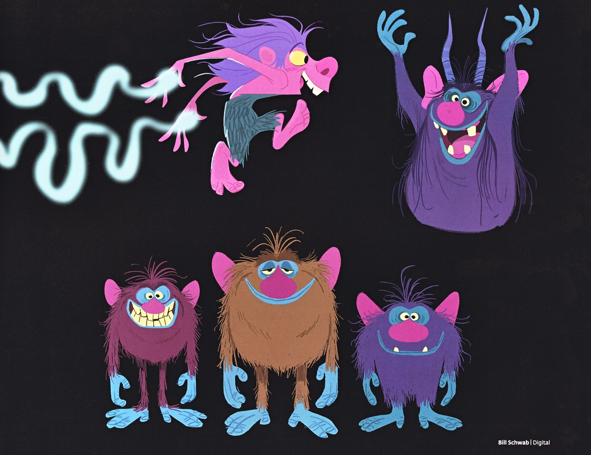
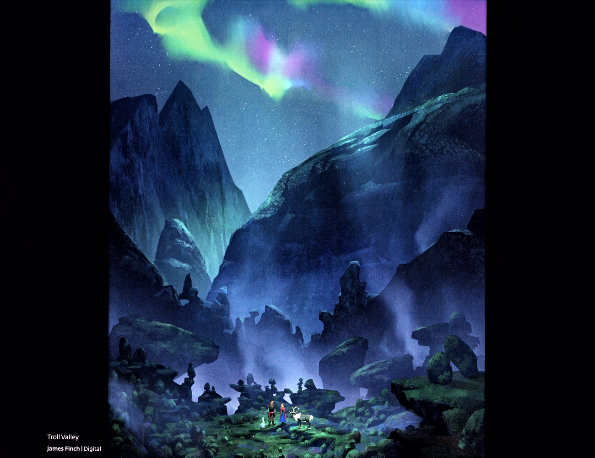

📖 设定集 · F1设定集
F1 图版 · 克里斯托夫 · 斯文 · 雪宝 · 巨魔
F1 官方设定集图版 · p093–p112
5
本卷页数
🎨
设定集
中/英
双语
🖼️ F1 官方设定集 · 原书图版
F1 图版 · 克里斯托夫 · 斯文 · 雪宝 · 巨魔
《The Art of Frozen》（Charles Solomon, Chronicle Books 2013） p093–p112
7
图版
p093–p112
原书页码
原书
扫描原图
笔记
逐页图注
⛄ 克里斯托夫、斯文、雪宝、巨魔与色彩脚本区间的剩余设定页——「绝不尊贵」的驯鹿、材料真实感的雪人、苔藓绿衣的巨魔，以及被冻结的快乐。
🦌 伙伴角色与色彩研究（p093–p112）

克里斯托夫服装设计（一）/ Kristoff — Costume Designs (Set 1)
两套全身服装配色设定：左为自信站姿，黑色外衣、红色花纹围巾、毛边靴；右为双手枕后放松姿态，蓝色兜帽外套配橙色镶边与宽腰带。作者为李敏奎（Minkyu Lee）。（F1设定集原页）

克里斯托夫服装设计（二）/ Kristoff — Costume Designs (Set 2)
另两套服装设定：左为奶油与深绿层叠兜帽外衣，配大背包与鹿角工具；右为黑色外套配花纹蓝袖、红腰带与流苏毛皮裙。作者为李敏奎与李布里特妮（Brittney Lee）。（F1设定集原页）

Olaf《In Summer》歌曲段落与灯光
Womersley 说明《In Summer》中背景被改为更"Olaf 化"，因一切发生在小雪人的想象里。John Lasseter 盛赞 Olaf 是突破性角色，歌曲天真诙谐。另一难题是雪人在雪景中如何突出：布局主管 Scott Beattie 通过纹理微差与灯光区分，灯光主管 Josh Staub 用轮廓光（rim（F1设定集原页）

Olaf《In Summer》画作 + Trolls 章节起始
上半为 Mac George 两幅《In Summer》完成画作：上幅 Olaf 在阳光海滩伴沙雕与海鸥起舞，下幅 Olaf 在条纹伞下啜饮热带饮料、蜜蜂好友相伴、帆船驶过。随后以"# Trolls"开启巨魔章节：一连串死里逃生将三人带至巨魔之境；这些巨魔并非《指环王》《哈利·波特》中愚钝的暴徒，而是外表滑稽、却能洞察（F1设定集原页）

Trolls 概念草图（老年巨魔与苔石巨魔）/ Troll Concept Sketches
本页为巨魔早期概念：一幅老年、覆苔、持杖巨魔的概念草图（右侧附铅笔稿），以及圆润苔藓巨魔的两种彩色视图——正面颈绕发光水晶，侧面展现覆绿苔与地衣的弧形巨石般背部。体现巨魔以"圆石"为造型母题、苔藓与发光水晶为标志性元素的方向。（F1设定集原页）

Troll 早期风格化概念
黑底上高饱和、风格化的早期巨魔概念：粉紫瘦长、腾跃的巨魔；举臂、带角的紫色蓬毛巨魔；以及洋红、棕、紫三色、咧大嘴的圆胖毛绒巨魔。由 Bill Schwab 绘制，呈现比定稿更狂野、色彩更跳脱的方向探索。（F1设定集原页）

Troll Valley 场景概念图
戏剧性的夜景：薄雾山脉谷地在极光之下，谷底 tiny 的安娜、克斯托夫与 Sven 立于叠石阵间，点明"Troll Valley"场景。视觉开发艺术家 Jang Lee 表示其职责是确保背景支撑前景、二者取得良好平衡。画面将角色尺度压缩以烘托巨魔山谷的神秘宏大。（F1设定集原页）
💡 图注说明
本页全部图版为《The Art of Frozen》（Charles Solomon, Chronicle Books 2013）原书扫描（原图复制，未压缩），图注（中文标题 + 要点首句）逐页取自官方设定集中文笔记，点击图片可查看原尺寸扫描。
📌 本页要点
你正在阅读《设定集》卷的「F1 图版 · 克里斯托夫 · 斯文 · 雪宝 · 巨魔」。本页由电影正典、官方设定集与官方小说综合梳理，可作为该主题的速查入口；右侧目录可快速跳转到本页各小节。